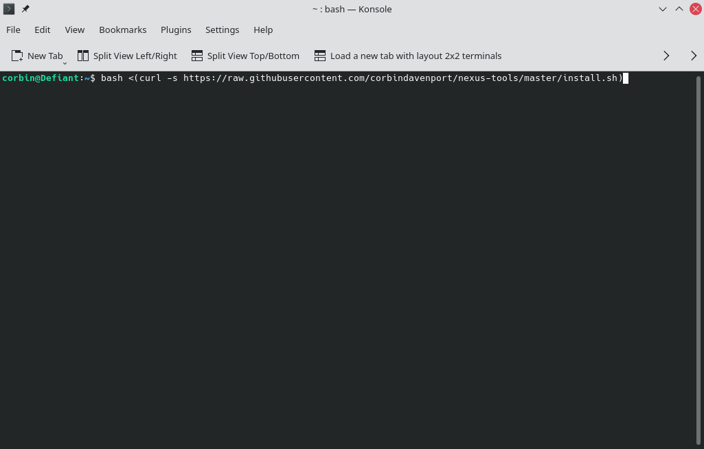
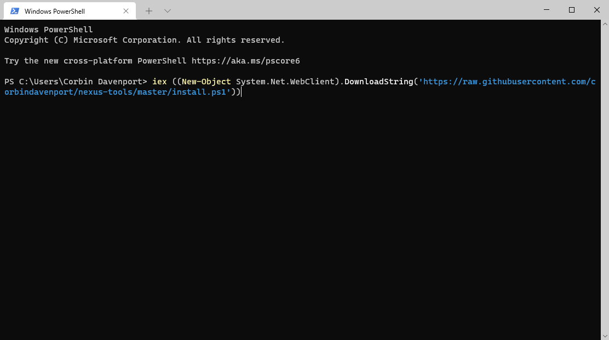

Nexus Tools is a simple installer for the Android SDK Platform Tools package, which includes ADB, Fastboot, Systrace, and other applications. It’s one of my longest-running software projects, since I published the first version in December 2013, and it remains one of the most popular ways to get started with Android development and debugging (especially on Mac). Now I’ve finished the biggest update yet.
Until now, Nexus Tools was written as a bash script, meaning it’s a series of commands that runs on the computer’s Bash Shell. This has a few advantages — I don’t have to compile anything, it works on all Unix-like computers (Linux, macOS, etc.), and so on. However, it has been extremely difficult for me to maintain a bash script that works across multiple versions of Bash across several different operating systems. Every time I changed something, something else almost always broke.

Nexus Tools 5.0 is completely rewritten in the Dart language, which means I can implement new features and cut back on potential bugs. The bash script now downloads and runs a Dart executable, which in turn does the actual installation process. The best part is that on the surface, it looks and works just like the old Nexus Tools — everything is still done within a few seconds.
The main functional change for all platforms is that Nexus Tools now installs itself to the same folder where all the SDK Tools are found. This means you can update the SDK Tools or delete them without going back to the GitHub page, by simply running “nexustools -i” or “nexustools -r” from the Terminal.

The Dart rewrite also gave me the opportunity to add support for Windows. Nexus Tools on Windows works exactly like the macOS and Linux versions — you paste a command into PowerShell, and Nexus Tools installs the SDK Tools (and itself) to a “NexusTools” folder in your user folder. Since Windows requires additional drivers for detecting ADB/Fastboot devices, Nexus Tools gives you the option of installing the Universal ADB Drivers package by developer Koushik Dutta.
You can try out Nexus Tools from the GitHub page.